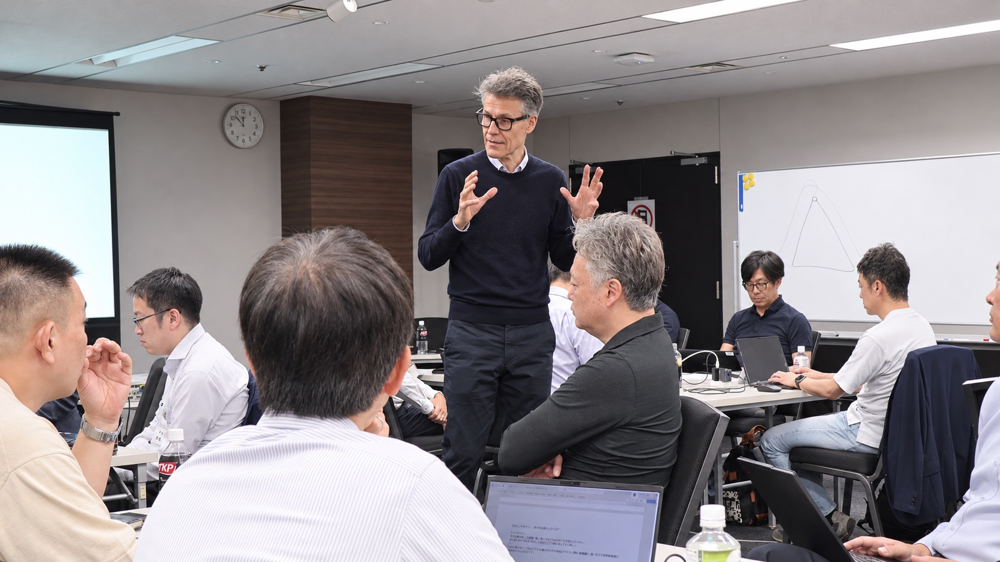

WHY OBSERVE
経営者になる準備は、
経営者の仕事を問い直すことから始まる。
第7単位では、経営者の実践に触れる講演、自社の社長へのインタビュー、チームプロジェクトのドラフト発表を行います。経営者の意思決定や経営ビジョンを、他者の経験だけでなく自社の現実に引き寄せて考えるプログラムです。
オブザーブでは、知識の習得だけでは見えにくいEMCの対話、問い、フィードバックの密度を確かめ、自社の次世代経営者育成との適合性をご検討いただけます。

この単位で向き合うこと
経営者の経験から学ぶ
榎戸康二氏による経営者講演を起点に、経営の現場で何を見て、どう判断してきたのかを考えます。
自社の社長に問う
社長インタビューと経営ビジョン発表を通じ、自社の経営に込められた考えを捉え直します。
構想を磨く
チームプロジェクトのドラフトを発表し、対話とフィードバックから解決の方向性を磨きます。
主なプログラム
- 1月15日 午前
- エグゼクティブ・セッション④「経営者講演」
講師：榎戸 康二 氏（創援株式会社 代表取締役社長／元パナソニック株式会社 専務取締役） - 1月15日 午後
- チームプロジェクト
ドラフト・プレゼンテーション（完成度60％） - 1月16日
- 社長インタビュー／経営ビジョン発表とフィードバック
担当：一條 和生 氏（IMD教授・一橋大学名誉教授）
開催概要
- 開催日
- 2027年1月15日（金）・16日（土）
- 会場
- 一般社団法人日本能率協会 研修室204
- 参加形式
- 会場での講義見学
- 参加費
- 無料
- 主催
- 一般社団法人日本能率協会
広告掲載前に、見学可能な日時・範囲、定員、申込先の最終確認が必要です。本初稿は共有済みの2026年度第37期プログラム資料をもとに構成しています。